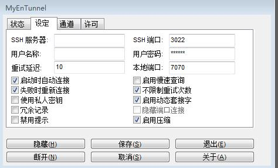

Linux+ssh+chrome(chromium)+proxy switchy + gSTM翻墙
上一篇讲到的是windows下的利用ssh+chrome(chromium)+proxy switchy + Myentunnel翻墙，其实在linux下和windows下没什么区别，都是用ssh代理，只是利用的客户端软件不一样而已。windows下用Myentunnel，linux下我们一般用gSTM。
gSTM (Gnome SSH Tunnel Manager) 是一款图形化的 SSH 隧道端口重定向管理工具 点击这里下载后安装，设置和之前讲得Myentunnel差不多.也是必填的几个：SSH服务器地址,SSH用户名，SSH密码，SSH端口3022，本地端口7070。
Proxy switchy的设置请参照我的另一篇文章 <>
comments
ssh+myEntunnel+chrome+proxy switchy翻墙
在windows/win7下如何翻墙？告诉你答案：ssh+myEntunnel+chrome+proxy switchy插件翻墙。
1、注册SSH账号
SSH是建立在应用层和传输层基础上的提供可靠传输的安全协议。在这里您首先需要去注册一个SSH代理的账号，一般是几块钱一个月的就挺好的了，当然也有免费注册的，不过免费的可能速度不是很快或者连接不稳定。注册SSH的网址我就不发了，不然就有广告的嫌疑了。自己到网上一搜一堆的那种。要是实在找不到的可以通过邮箱54xiaowoniu@sina.cn跟我联系，我告诉你怎么注册。基本上15分钟搞定。
2、下载MyEntunnel
MyEntunnel是用来登录SSH服务器并在本机自动架设一个socks5代理的软件，下载并安装Myentunnel运行。
在桌面右下角任务栏上出现了黄色的锁，说明还没连接上。右击显示，作如下设置：

这里，SSH服务器栏填你在上一步中注册SSH账号的服务器地址。一般你注册好SSH账号后服务器地址，SSH端口，用户名和密码都是知道了的，相应地填上就可以了。本地端口填7070,这个要和浏览器Chrome，Proxy switchy的一致，这个下面会讲到。
另外，记得勾上图中的那几个选项，比如失败自动重连什么的。设置好后再重新连接，黄色的锁就会变成绿色的 ...
comments
Read More